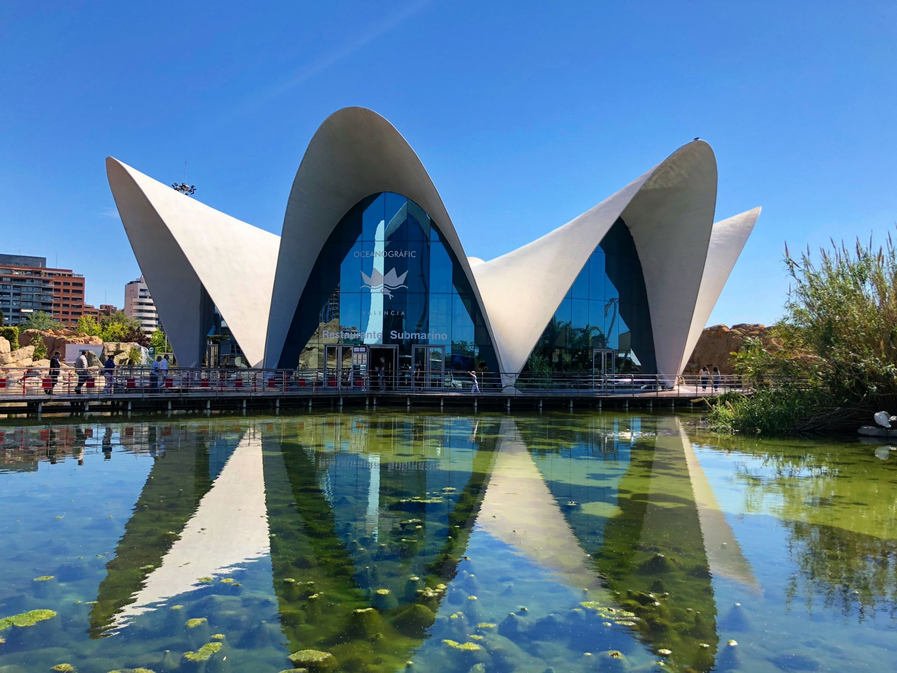
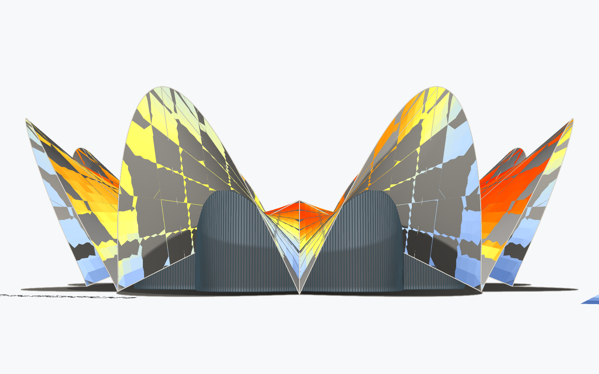
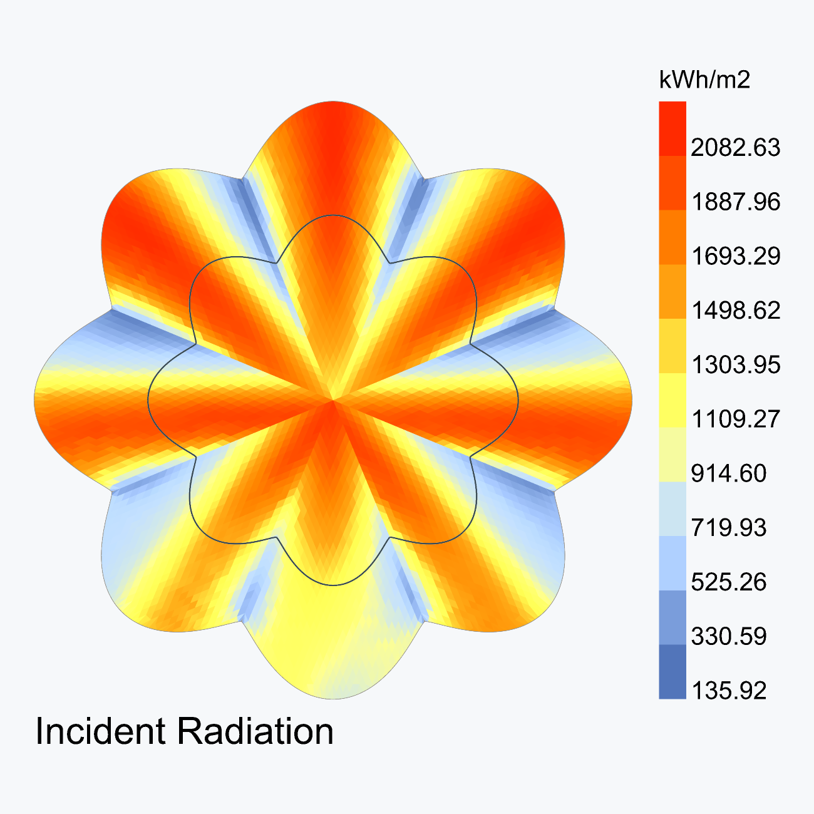
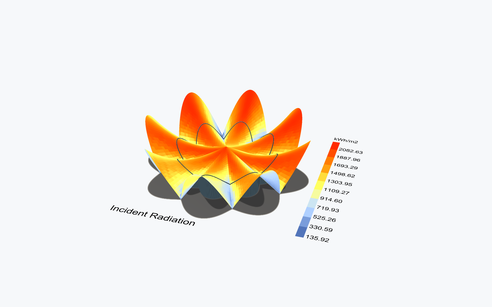
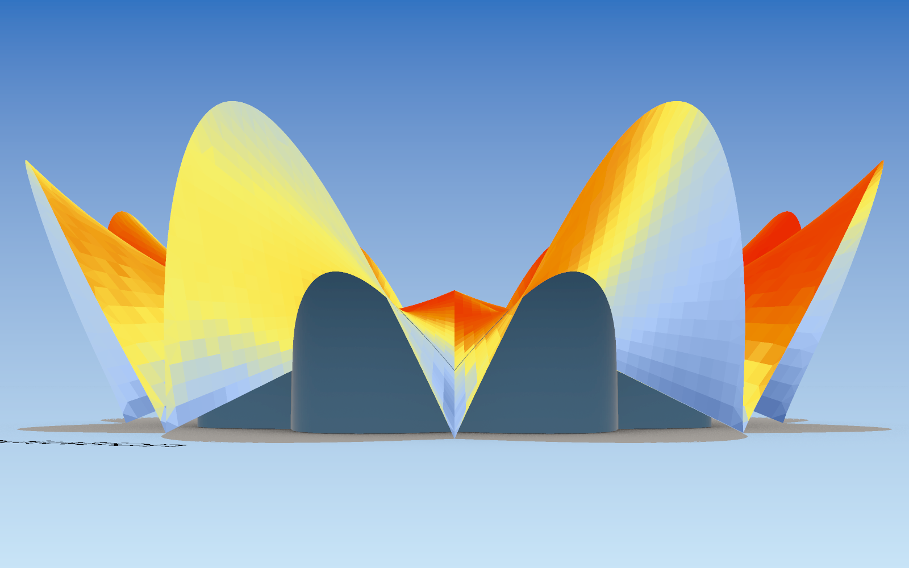
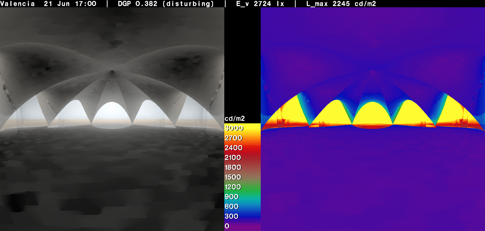
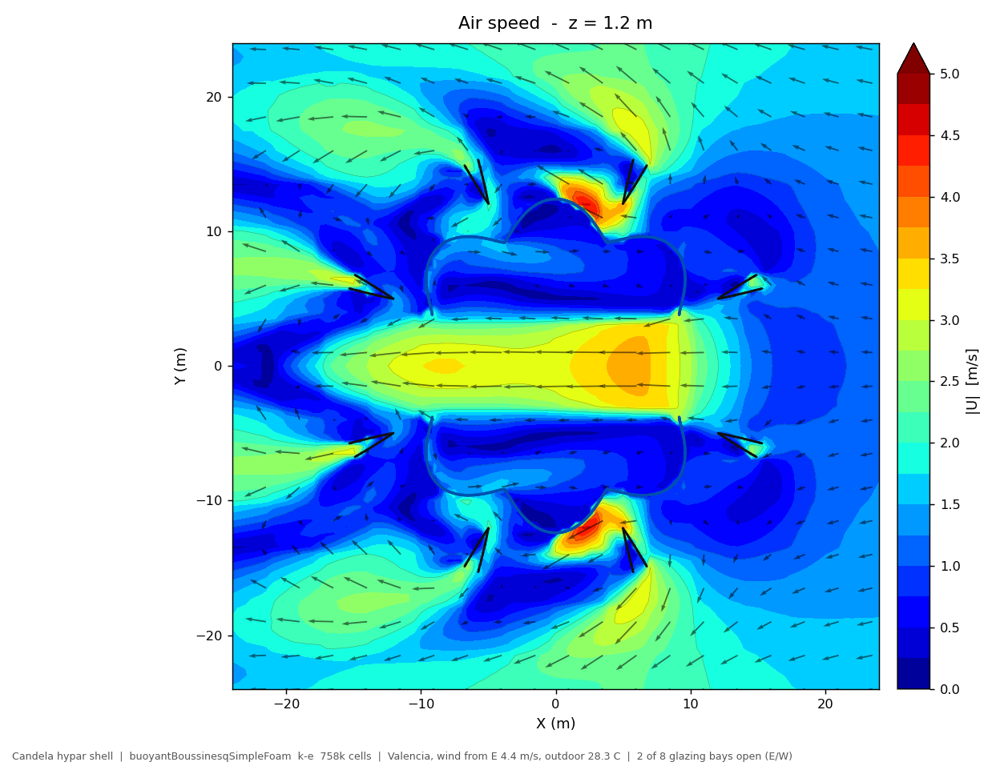
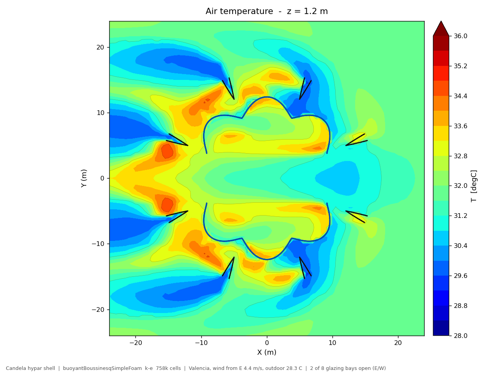

Félix Candela 型 HP シェル（8弁グロインヴォールト）— 年間日射量・室内グレア・自然換気CFD
本レポートは、Grasshopper 上で構築した Félix Candela 系の HP（双曲放物面）シェル建築モデルに対して実施した、3種の環境解析の結果をまとめたものである。対象形状は、バレンシア L'Oceanogràfic の Restaurante Submarino（2002年、Candela 構想・Alberto Domingo / Carlos Lázaro 実現）のプロポーションに準拠した8弁の水蓮形シェルである。同建物は Los Manantiales（1958年、ソチミルコ）の直系にあたり、幾何構成は共通で花弁の立ち上がりが大きい点が異なる。解析はいずれも実測ではなくモデルベースであり、材料物性・表面温度・内部発熱は仮定値である。数値は絶対値としてではなく、形状が環境性能に与える傾向を読むためのものとして扱う。


| 解析 | ツール／ソルバー | 主要条件 | 主要結果 |
|---|---|---|---|
| 年間日射量 | Ladybug Tools 1.72 Radiance gendaymtx（Tregenza 145パッチ） |
EPW通年、解析点 5,264（1mグリッド）、相互反射なし | 平均 1,290 kWh/m²·年、シェル全体 1.94 GWh/年。北側花弁の上面が最大、南側上面が最小 |
| 室内グレア | Radiance 6.0.2rpict 180°魚眼 + evalglare 3.06 |
6/21 17:00、太陽高度 38.1°／方位 270.5°、視点高 1.6 m 西向き | DGP 0.382（不快グレア）、鉛直面照度 2,724 lx、最大輝度 2,245 cd/m²。太陽面は直視されない |
| 自然換気CFD | OpenFOAM v2412buoyantBoussinesqSimpleFoam k-ε |
東風 4.4 m/s、外気 28.3 ℃、8ベイ中2ベイ（東西）開放、758,244セル | 110 m³/s＝265 ACH。東西軸のみジェットが貫通し南北ロブは 0〜1 m/s で滞留 |
| 項目 | 値 |
|---|---|
| 気象データ | ESP_VC_Valencia.AP.082840_TMYx.2011-2025 |
| 出典 | climate.onebuilding.org（TMYx） |
| 緯度・経度 | 39.485 °N / −0.4747 °E |
| 標高 | 62 m |
| 解析年時間数 | 8,760 h |
| 換気検討時間帯（外気 26–32 ℃） | 値 |
|---|---|
| 該当時間数 | 1,255 h / 年 |
| 卓越風向 | 東（47.1 %） |
| 同 平均風速 | 4.4 m/s |
| 次点風向 | 南東（25.3 %, 4.2 m/s） |
| 平均外気温 | 28.3 ℃ |
Rhino 8 には Ladybug Tools が未導入だったため、GUIインストーラを使わず以下を構築した。CFD用の Butterfly プラグインは2022年で更新・配布とも終了しているため、OpenFOAM は Docker で直接運用している。
.ghuser 122個scripts（IronPython 2.7）へRAYPATH 永続化opencfd/openfoam-default。arm64 マニフェストで実行屋根は n 枚の双曲放物面が中央クラウンで交わるグロインヴォールトである。各 HP 曲面は隣接する2本のグロイン（谷折れ線）を自身の直線生成母線として持つため、グロインはクラウンから接地点まで完全な直線となる。HP 曲面の2つの生成直線族は直交する必要がないので、この構成は任意の弁数に一般化でき、平面セクター角 360°/n の扇形をそのまま母線方向に取ればよい。本モデルでは n = 8 とした。
Los Manantiales では自由端が鉛直平面による切断（＝平面形が直線）で、その結果として先端が鋭い凧形になる。一方 Valencia の花弁は先端が丸く幅広い。そこで本モデルではシェル面自体は厳密な HP 曲面のまま、トリム輪郭のみを「谷ではグロイン方向に接し、先端で丸く膨らむ曲線」に置き換えている。膨らみ量は lobe_bluntness で制御する。
| パラメータ | 値 |
|---|---|
弁数 lobe_count | 8 |
先端半径 R_tip（先端間スパン） | 20.0 m（40.0 m） |
支点半径 R_support（接地リング径） | 16.0 m（32.0 m） |
クラウン高 h_crown | 6.5 m |
花弁先端高 h_tip | 11.5 m |
輪郭の丸み lobe_bluntness | 1.2 |
ガラスのセットバック glass_setback | 0.62 |
| ガラス囲い内の容積 | 1,494 m³ |
| ガラス囲い内の床面積 | 411 m² |
| 平均天井高 | 3.63 m |
形状生成にあたり、以下2点を毎回数値で検証している。
| 検証項目 | 結果 |
|---|---|
| グロインの着地標高（0でなければ接地しない） | 0.000 mm |
| 自由端の最低標高（負なら地面に潜る） | +0.00 m |
| 自由端の最高標高（＝先端高） | +11.50 m |
輪郭を丸くすると自由端が地面より下に潜る危険があるが、lobe_bluntness を振りながら自由端の最低標高を監視することで、8つの接地点でのみ地面に接する状態を保っている。
| 要素 | モデル化 |
|---|---|
| シェル | HP曲面8枚。実厚（4 cm級）は未モデル化、CFDではゼロ厚バッフル |
| ガラス | 平面形輪郭を 0.62 倍に内側オフセットし、地面からシェル下面まで立ち上げた8ベイ |
| テラス | シェル外形と同一の平板スラブ |
| 方位 | 北 = +Y（地理方位は未設定、Ladybug既定） |
この形状は環境的に3つの明確な性格を持ち、それが後段の各解析結果を規定している。第一に、花弁が外側に倒れているため、上から見える面はその倒れた向きと反対を向く。第二に、シェルが大きく跳ね出すため、ガラス面に対して深い庇として働く。第三に、接地点が8つに限られるため周囲が大きく開放され、開口を設けた際の換気抵抗が極めて小さい。

Ladybug Tools により、LB Import EPW → LB Cumulative Sky Matrix → LB Incident Radiation のフローで年間積算日射量を算出した。天空マトリクスは Radiance の gendaymtx により Tregenza 145パッチで生成し、直達・拡散の2成分を持つ。入射計算は CAD 側のレイ交差を用いる。
| 設定 | 値 |
|---|---|
| 解析グリッド | 1.0 m |
| 解析点数 | 5,264 |
| 天空分割 | 145 パッチ ×2 |
| 対象面 | シェル上面・下面 |
| 相互反射 | 考慮しない |
| 地面反射 | 擬似地面半球のみ |
| 年間積算日射量 | kWh/m²·年 |
|---|---|
| 最小 | 136 |
| 第1四分位 | 907 |
| 中央値 | 1,332 |
| 平均 | 1,290 |
| 第3四分位 | 1,704 |
| 最大 | 2,083 |
| シェル全体 受熱量 | 1.94 GWh/年 |
最大値 2,083 kWh/m² はバレンシアの水平面全天日射量（概ね 1,700〜1,800 kWh/m²）を上回るが、これは南に傾いた面が水平面より多く受熱するためで、妥当な範囲にある。


平面図（前ページ図）で最も特徴的なのは、北側の花弁が赤く、南側が青いという一見逆の分布である。これは幾何から素直に説明できる。花弁は外側に倒れているため、上から見える面の法線は「倒れた向きと反対」を向く。すなわち南に倒れた花弁の上面は北を向き、北に倒れた花弁の上面は南を向く。結果として、平面図上の南側ロブが最小（約 500〜700 kWh/m²）、北側ロブが最大（約 2,000 kWh/m²）となる。
設計的な含意として、集熱・太陽光発電を考えるなら北側ロブの上面が最有力であり、逆に南側ロブの上面は年間を通して日射が少ないため、トップライトなど採光要素を置いても熱負荷の増加が小さい。またシェル下面（内側）は 136〜900 kWh/m² 程度に留まり、跳ね出しが庇として有効に機能していることが分かる。
Radiance により、室内からガラス越しに外を見た場合の輝度分布と不快グレア指標 DGP を算出した。Honeybee のレシピ系（queenbee ランナー）は未構築のため、Radiance のコマンド列を直接実行するパイプラインを構成した。
gendaylit → oconv → rpict（180°等角魚眼）→ evalglare / falsecolor
| 設定 | 値 |
|---|---|
| 日時 | 6月21日 17:00 |
| 太陽高度／方位 | 38.1° / 270.5°（ほぼ真西） |
| 法線面直達日射 | 657 W/m² |
| 水平面拡散日射 | 85 W/m² |
| 視点位置 | 中心から 6 m、高さ 1.60 m |
| 視線方向 | 西（太陽方位） |
| 画角・解像度 | 180° 魚眼 / 800×800 |
| 間接反射 | -ab 2, -ad 1024 |
| 要素 | 値 |
|---|---|
| シェル（コンクリート） | 反射率 0.60 |
| テラス | 反射率 0.25 |
| ガラス | 透過率 0.68 / 0.72 / 0.75（RGB） |
| 指標 | 値 |
|---|---|
| DGP（Daylight Glare Probability） | 0.382 |
| グレア評価 | disturbing（不快） |
| 鉛直面照度 Ev | 2,724 lx |
| 最大輝度 Lmax | 2,245 cd/m² |
DGP の一般的な区分は 0.35 未満＝知覚可能以下、0.35–0.40＝不快、0.40–0.45＝妨害、0.45 以上＝耐え難い。本ケースは不快域の下限付近に位置する。

注目すべきは 最大輝度が 2,245 cd/m² に留まっている点である。太陽面が直接視野に入っていれば 10⁵〜10⁸ cd/m² のオーダーになるため、この値はこの視点から太陽面が直接見えていないことを意味する。太陽高度 38° の西日に対して、大きく跳ね出したシェルが庇として有効に機能している。
にもかかわらず DGP が不快域に達するのは、鉛直面照度 Ev が 2,724 lx と高いためである。DGP は光源輝度項と鉛直面照度項の和で構成されるが、本ケースでは後者が支配的である。すなわちグレアの原因は一点の眩しさではなく、明るい開口が視野に占める面積の大きさにある。
この構造は対策の方向を規定する。庇をさらに深くしても Lmax は既に低いため効果は限定的で、有効なのは開口面の輝度そのものを下げること（ガラスの可視光透過率低減、外付けルーバー、あるいは視線高さ付近のみの遮蔽）である。逆に言えば、シェル形状による日射遮蔽は既に十分機能しており、形状変更で解く問題ではない。
風力と浮力を同時に解くため buoyantBoussinesqSimpleFoam（非圧縮＋Boussinesq浮力＋温度輸送、定常RANS）を使用した。シェルとガラスはゼロ厚のバッフルとして扱い、8ベイのうち東（風上）と西（風下）の2ベイのガラスを除去して開口とした。
| 項目 | 値 |
|---|---|
| 計算領域 | 210 × 140 × 60 m |
| セル数 | 758,244 |
| 乱流モデル | k-ε |
| 流入 ABL | 4.4 m/s @ 10 m, z₀ = 0.5 |
| 外気温 | 28.3 ℃ |
| テラス床面温度 | 35 ℃ |
| シェル表面温度 | 33 ℃ |
| ガラス表面温度 | 31 ℃ |
| 反復数／計算時間 | 900 / 578 s（8並列） |
| 指標 | 値 |
|---|---|
| 通過風量 | 110 m³/s |
| 換気回数 | 265 ACH |
| 断面平均風速 | 0.81 m/s |
| 室内断面積（東西軸直交） | 136 m² |


265 ACH という値は異常値ではなく、幅約 9 m・高さ約 5 m のガラス壁を2面まるごと除去した結果である。この状態はもはや「窓を開けた室内」ではなく半屋外パビリオンであり、居住域に 3〜4 m/s の風が吹き抜ける。快適性の観点では明らかに過大で、実用上は開口面積を絞るか可動制御が必要になる。
より重要な知見は換気の偏りである。開口を設けた東西軸のみをジェットが直進し、残る6弁は 0〜1 m/s でほとんど空気が入れ替わらない。8弁のうち2弁を対向させて開ける配置は、換気量は稼げても室内全体を均一に換気しない。放射状の平面形に対しては、対向2点ではなく円周方向に分散した複数開口、あるいは中央クラウン付近の頂部排気（浮力を利用したスタック効果）との併用が有効と考えられる。
温度分布では、床面近傍に厚さ 1 m 程度の高温層（33〜35 ℃）が形成され、その上は外気温近くまで戻る。通過風量が大きいため躯体からの熱がほとんど蓄積されず、室温上昇は 2〜3 K に抑えられている。
3種の解析を通じて一貫して現れたのは、この形状の環境性能が「花弁の傾き」と「跳ね出し量」という2つの幾何パラメータにほぼ支配されるという点である。花弁の傾きは屋根面の受熱分布を方位に対して反転させ、跳ね出しは太陽面の直視を遮ることで最大輝度を抑えている。一方で、接地点が8点に限られる開放的な構成は換気抵抗をほとんど持たないため、開口設計は「取れるかどうか」ではなく「絞り方と分散のさせ方」の問題になる。
次の展開としては、(1) 日射解析結果を CFD の表面温度境界条件に与えた連成、(2) 開口配置のパラメトリック比較（対向2点／直交2点／分散4点／頂部排気併用）、(3) 既に導入済みの EnergyPlus 24.2.0 と honeybee-energy の AirflowNetwork による年間8760時間の自然換気成立時間率の評価、が有効と考えられる。特に (3) は CFD が答えられない「年間で何時間その換気が使えるか」を扱うため、CFD の空間分布評価と相補的である。
| 成果物 | 内容 |
|---|---|
valencia_submarino.gh / .3dm | 形状生成の Grasshopper 定義（7スライダー）と Rhino モデル |
valencia_submarino_radiation.gh | Ladybug 日射解析フローを含む定義 |
radiation_*.png（3枚） | 年間日射量：俯瞰・平面・アイレベル |
glare_*.png（2枚） | 室内グレア：魚眼トーンマップ＋輝度偽色 |
cfd_vel_*.png / cfd_temp_*.png（16枚） | CFD：水平5断面・鉛直3断面 × 風速／温度 |
cfd_case/ | OpenFOAM ケース一式（辞書・境界条件・作図スクリプト） |